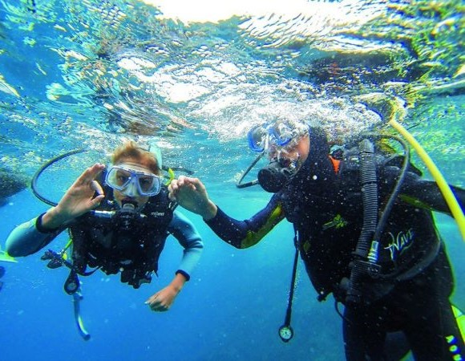
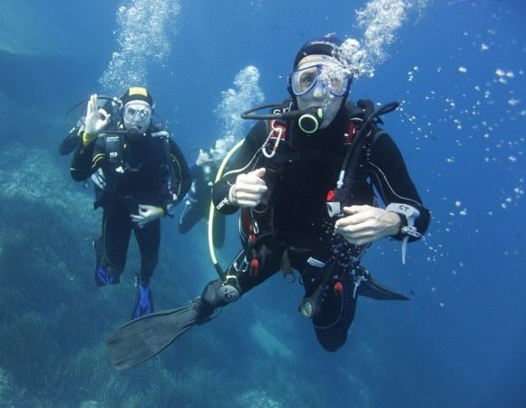
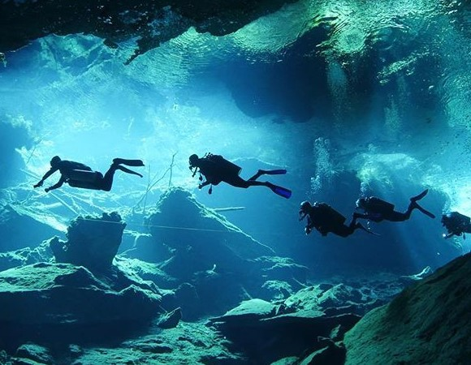
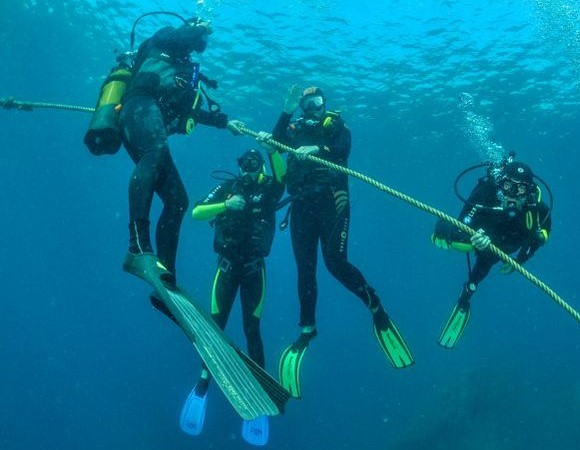
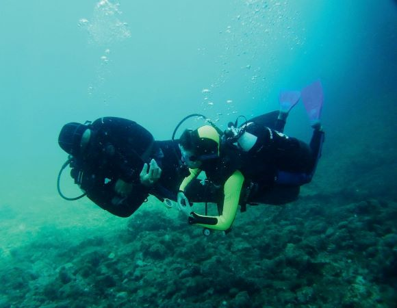
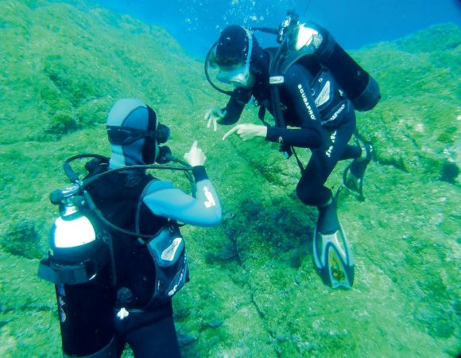
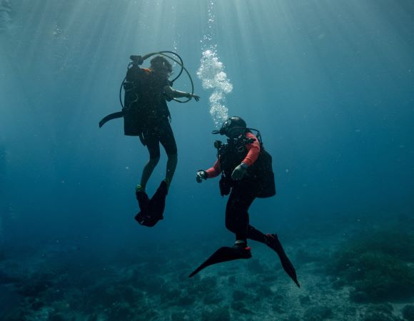
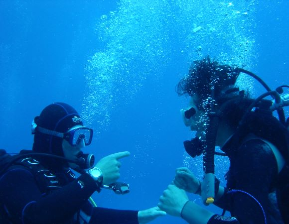

Quelques informations sur les niveaux de plongée
Si vous avez déjà fait votre baptême de plongée ou que vous vous intéressez de plus en plus à la pratique de cette activité fascinante, vous avez certainement entendu parler des différents niveaux à passer. Ceux-ci permettent de plonger à différentes profondeurs en fonction des compétences acquises, encadrés ou en autonomie, pour le plaisir et la sécurité de tous. La plongée est une activité qui s’est démocratisée assez récemment : c’est dans les années 1960 que sont apparues les formations pour le grand public. Aujourd’hui, il existe différents organismes français ou anglo-saxons qui proposent des cursus pour acquérir de plus en plus d’autonomie et de connaissances. La formation est découpée en niveaux : 1, 2, 3 et 4. Ces niveaux peuvent se passer en une ou deux semaines intensives mais peuvent aussi être étalés dans le temps. Il existe des paliers intermédiaires qui facilitent la formation et permettent d’étaler chaque niveau sur plusieurs mois.
Niveau 1
Niveau 2
Niveau 3
Niveau 4
LE NIVEAU 1 : PLONGER JUSQU’À 20 MÈTRES
Après le baptême, le niveau 1 est très intéressant à passer pour les plongeurs amateurs. Il donne accès aux plongées jusqu’à 20 mètres et c’est à cette profondeur que l’on trouve les paysages les plus colorés. Il permet aussi de plonger sur des tombants de roches et d’explorer certaines grottes, ainsi que de s’immerger de nuit pour observer la faune et la flore nocturne. Au niveau 1, les sorties restent toujours encadrées par un moniteur. Pour le passer, il faut évidemment savoir nager et avoir au moins 12 ans. Il faudra posséder un certificat médical d’aptitude à la pratique de la plongée lors de vos passages de niveau. Ensuite, vous pouvez choisir de suivre la formation en milieu naturel ou en fosse de plongée. Celle-ci dure minimum trois jours puisque pour valider les compétences, il faut réaliser environ six plongées.
LE NIVEAU 2 : PLONGER EN AUTONOMIE
Pour passer le niveau 2 de plongée, il faudra obligatoirement justifier d’un niveau 1 ou d’un brevet équivalent. Vous devez aussi justifier d’une dizaine de plongées en exploration après le passage du niveau 1. Cette fois-ci, deux semaines de formation sont nécessaires, obligatoirement en milieu naturel, pour compléter le niveau entièrement mais elles peuvent être découpées en deux fois. Une première semaine permettra l’obtention de la qualification « plongeur encadré à 40 mètres » et la formation pourra être complétée l’année suivante. Le niveau 2 est très intéressant car il permet de découvrir les fonds marins jusqu’à 40 mètres de profondeur avec un moniteur. C’est à cette profondeur que l’on trouve des épaves de bateaux et d’avions, notamment en Méditerranée. Il permet aussi de découvrir la plongée en autonomie. Avec une ou deux autres personnes du même niveau, vous pouvez ainsi partir sans moniteur et plonger jusqu’à 20 mètres.
LE NIVEAU 3 : DÉCOUVRIR LES FONDS-MARINS JUSQU’À 60 MÈTRES
Le niveau 3 est le plus haut niveau technique de plongeur et évidemment le plus exigeant puisqu’il faut justifier d’une vingtaine de plongées en exploration après son niveau 2 pour y prétendre. Il est également obligatoire d’être majeur pour s’inscrire à cette formation. Là encore, il faudra au minimum deux semaines et 20 plongées pour l’obtenir. Il peut être découpé en deux : la première partie consiste en un stage de préparation et la seconde permet d’obtenir le niveau. Pour les plongeurs, c’est un graal car il donne accès à la majorité des sites de plongées en France et dans le monde.
LE NIVEAU 4 : ENCADRER UN GROUPE DE PLONGEURS
Le niveau 4 n’est pas un niveau de plongeur, il s’agit du premier niveau d’encadrant. Il faut évidemment justifier du niveau 3 et d’une cinquantaine de plongées en exploration après son obtention. Il faut donc avoir acquis une solide expérience pour prétendre à ce niveau. La formation dure deux semaines avec une formation initiale et une formation finale de 20 plongées minimum en milieu naturel. Une fois obtenu, vous pourrez guider une palanquée, votre propre groupe de plongeurs de différents niveaux jusqu’à une profondeur de 40 mètres maximum. Vous ne plongez plus pour vous mais pour les autres. Cela implique donc de nouvelles responsabilités. Sous l’eau, vous êtes un guide, le sauf-conduit de votre groupe en cas de problème et c’est vous qui devez ramener tout le monde au bateau à la fin de l’immersion. Il s’agit aussi du premier pas vers l’enseignement de la plongée et le monitorat.
Enseigner la plongée !
Si vous êtes un plongeur expérimenté, peut-être avez-vous l'envie de partager votre passion en l'enseignant à d'autres plongeurs. Il existe quatre niveaux d'enseignement, de l'initiateur club (en bassin), au formateur de formateurs (MF2). Le moniteur de plongée en scaphandre aide les plongeurs à pratiquer leur activité, en tous milieux, naturels ou artificiels. Il leur fait découvrir, protéger et mettre en valeur les milieux subaquatiques. Il assure leur sécurité, les encadre et les accompagne en exploration. Il peut également les initier à d’autres activités culturelles ou sportives liées à la pratique de la plongée subaquatique.Les formations pourront être ouvertes aux confirmés comme aux débutants de la plongée. Le brevet qu’il possède détermine souvent le type de missions qui pourront lui être confiées
E1
E2
MF1 - E3
MF2 - E4
E1 - INITIATEUR DE CLUB
Le brevet d'initiateur est le premier niveau d'enseignement de la plongée. Il est accessible dès le niveau 2 de plongeur. L’initiateur de plongée vous permet de former des plongeurs en piscine en les préparant techniquement aux niveaux 1 et 2 de plongeur, dans l’espace 0 – 6 mètres. Vous aurez ainsi la possibilité de dispenser les cours théoriques N1 & N2 et devenir Directeur de Plongée en Piscine. Premier niveau d’enseignement de la plongée sous-marine, vous pourrez développer vos compétences pédagogiques, techniques et réaliser des baptêmes de plongée que ce soit en piscine ou en milieu nature.Pour le plaisir de partager sa passion avec d'autres et faire progresser la plongée sous marine...
E2 - ENSEIGNER LA PLONGÉE JUSQU'A 20M
Un E2 est un plongeur niveau 4 titulaire du brevet d'initiateur. En plus des prérogatives du E1, l'initiateur titulaire du brevet de plongeur niveau 4 peut enseigner la plongée au sein d'un club, dans la zone des 20 mètres (jusqu'au niveau 4), sous la direction d'un moniteur fédéral 1er degré (enseignant E3). Il peut ainsi participer en partie à la formation des niveau 3 et niveau 4. Vous êtes ainsi un appui essentiel des moniteurs dans la formation de ces plus haut niveau technique.
E3 - MONITEUR FÉDÉRAL 1er DEGRÉ
Le titulaire d'un diplôme de "Moniteur fédéral 1 er Degré" encadre bénévolement des cycles de préparation et d'entrainement de tous les niveaux de plongeurs jusqu'à 40m. Ses fonctions lui permettent de garantir les conditions optimales de sécurité lors de la pratique. D'organiser des séances de formation théoriques appliquées à la plongée, d'encadrer les séances de perfectionnement technique. Vous pourrez faire progresser les plongeurs et leur permettre d'atteindre leur objectif. Vous validez les épreuves et décernez les brevets de plongeur niveau 1 à niveau 3. L'activité d'un MF1 est uniquement bénévole. En France, pour être rémunéré, il faut être titulaire d'un brevet d'État 1er degré (BEES 1), qui possède les mêmes prérogatives que ci-dessus.
E4 - MONITEUR FÉDÉRAL 2ème DEGRÉ
Le moniteur fédéral 2e degré (MF2) est un plongeur titulaire du quatrième niveau d'enseignement (E4). Il peut enseigner la plongée à tous le splongeurs jusqu'à 60m. Il s'agit du plus haut degré de moniteur fédéral. C'est un formateur de formateur.Il dispose des mêmes prérogatives techniques qu'un brevet d'État 2e degré (BEES 2). S'il n'est pas titulaire du BEES 1, le MF2 ne peut en revanche pas exercer ses prérogatives en France contre rémunération. Le MF2 peut encadrer les plongeurs en formation au-delà de 40m, en fonction du mélange utilisé et sous réserve qu'il soit titulaire de la qualification « mélange » correspondante. Il peut faire partie des jurys des niveaux 4, initiateur et MF1.